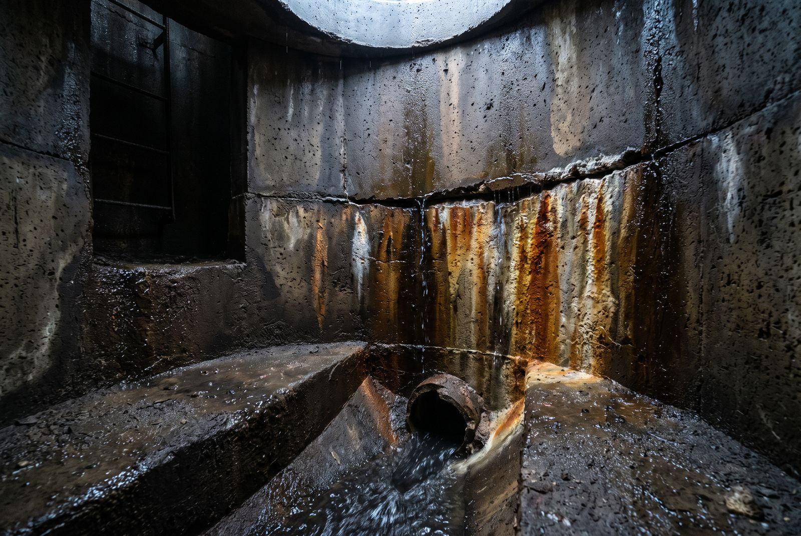

By the Editorial Team | Published: July 2026 | Last Updated: July 2026
Choosing Among the Trenchless Sewer Rehabilitation Methods
Trenchless rehabilitation covers several methods, and each one solves a different defect without digging up the street. Chemical grouting seals joints, laterals, and structures against infiltration. Cured-in-place pipe (CIPP) lining rebuilds the pipe barrel structurally. Coatings and spray linings restore manhole walls. Selecting among them starts with two questions: is the defect structural or a leak, and is it in the pipe, a joint, or a structure. This page compares the methods so the right one is matched to the defect.
How the Methods Differ
The methods differ most in what they repair: the pipe barrel, the joints, or the structure. Structural methods rebuild load-carrying capacity, while sealing methods stop water at joints and connections. Some defects need one, some need both. The comparison below frames where each method fits.
| Method | What it repairs | Best-fit defect | Key limit |
|---|---|---|---|
| Chemical grouting | Seals joints, laterals, penetrations | Active infiltration at joints and connections | Not a structural rebuild |
| CIPP lining | Rebuilds the pipe barrel | Structurally deteriorated mainline | Bridges but may not seal laterals and joints |
| Spray-applied lining | Restores structure walls | Manholes and large structures | Surface prep dependent |
| Manhole coatings | Protects and seals manhole interior | Corroded or leaking manholes | Needs infiltration stopped first |
The table frames the choice, but most real defects call for more than one method. Matching each method to the defect it repairs best is what the sections below work through.
When Chemical Grouting Is the Right Call
Chemical grouting is the default when the problem is active water at a joint, lateral, or penetration rather than a collapsing pipe. It is injected through packers and cures in the soil around the defect, forming a barrier that stops groundwater before it reaches the pipe. Because it seals the soil-side path, it addresses infiltration that a structural liner would simply cover. Grouting is also the method used to seal the many lateral connections that dominate infiltration in most systems. Its role is sealing, not structural rebuilding.

When Lining or Coatings Fit Better
Lining and coatings earn their place where the pipe or structure has lost integrity, not just where it leaks. CIPP lining rebuilds a mainline that is cracked, corroded, or losing shape, restoring a smooth structural barrel inside the old pipe. Spray-applied linings and coatings rebuild and protect manhole walls that have deteriorated from corrosion. These structural methods restore the asset, but they do not by themselves seal every joint and lateral connection. That is why grouting and lining are so often paired.
- Choose CIPP lining when the mainline is structurally deteriorated, not just leaking.
- Choose coatings or spray lining when a manhole wall has corroded or lost integrity.
- Choose grouting when active infiltration enters at joints, laterals, or penetrations.
- Combine grouting with lining when a rebuilt pipe still has leaking joints and laterals.
Each line above points a specific defect to the method built for it. The pattern that emerges is that structural and sealing methods solve different halves of the same problem.
Why the Methods Work Best Together
The most durable programs sequence methods so each does the part it does best. A liner rebuilds the pipe barrel, but the annular space and lateral connections around it can still admit water. Grouting seals those joints and connections, and coatings finish the manholes. Used alone, any single method leaves paths open; used together, they close the structural and the water-entry problems at once. Reading the defect mix decides the sequence.
How to Match the Method to the Defect Quickly
The method decision follows a short chain of questions, and answering them in order narrows the choice fast. Naming the defect type first, then the asset, points to the right method without guesswork. The checklist below captures the usual logic crews apply on site.
- Is the pipe structurally failing? If yes, line it, then seal the joints that remain.
- Is water entering at a joint or lateral? If yes, chemical grouting seals it.
- Is the defect in a manhole wall? If yes, grout the infiltration, then coat the interior.
- Is it a direct inflow connection? If yes, disconnect or seal the path at the source.
Working the questions in this order narrows the choice in a single pass. Naming the defect and the asset first is what keeps method selection quick and consistent.
Frequently Asked Questions
Is chemical grouting or CIPP lining better for I&I?
Neither is universally better because they repair different things, and infiltration control often needs both. Grouting seals joints, laterals, and penetrations where groundwater actually enters. CIPP lining rebuilds a structurally failing pipe barrel but may not seal every joint or lateral. For infiltration specifically, grouting targets the leaks, while lining addresses structural loss. The defect mix decides which leads.
Can you grout a sewer after it has been lined?
Yes, grouting after lining is common because a liner can bridge joints and laterals without sealing them. Test-and-seal grouting through the liner or at reinstated lateral connections closes those remaining paths. Sealing after lining addresses infiltration that the structural liner alone left open. Many programs plan the two steps together from the start.
What is CIPP lining?
Cured-in-place pipe is a resin-saturated liner installed inside an existing pipe and cured to form a new structural pipe within the old one. It rebuilds load-carrying capacity without excavation. It is well suited to mainlines that are cracked, corroded, or deforming. It is a structural rebuild, so it is chosen for pipe integrity rather than purely for sealing leaks.
Do manhole coatings stop infiltration by themselves?
Not by themselves, because a coating applied over active leaks will not bond or last. Infiltration has to be stopped first, often with grouting, so the wall is dry enough to coat. The coating then protects and seals the restored surface. Coating and sealing are sequenced, not substituted for one another.
Which method is least disruptive?
All of these trenchless methods avoid open excavation, so all are far less disruptive than dig-and-replace. Grouting and lining work from inside the pipe through existing access points. Manhole work happens within the structure. Excavation is reserved only for defects too severe for trenchless repair, which keeps most programs contained.
How long do these repairs last?
Service life depends on the method and the defect, but all of these are long-term repairs when matched correctly. A structural liner restores a pipe for decades when installed properly. A grouted seal lasts when the resin suits the joint and the water path is filled completely. Coatings last when applied to a properly prepared, dry surface. Matching method to defect is what drives longevity.
Can one contractor do all of these methods?
Often yes, and combining them under one program improves sequencing and accountability. A single provider can inspect, grout, line, and coat in the right order rather than leaving gaps between trades. Coordinated sequencing prevents one crew from covering a defect another needed to seal. The result is a program where structural and sealing work reinforce each other.